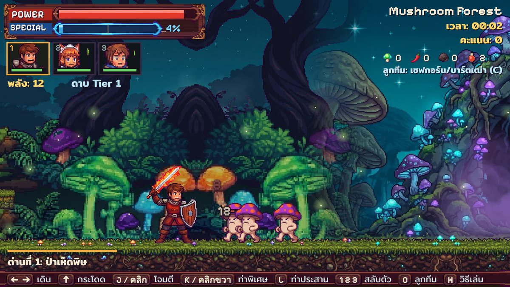
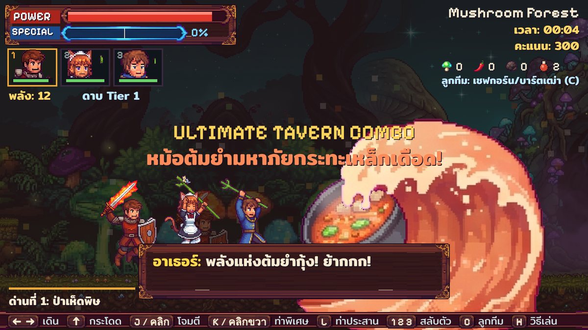
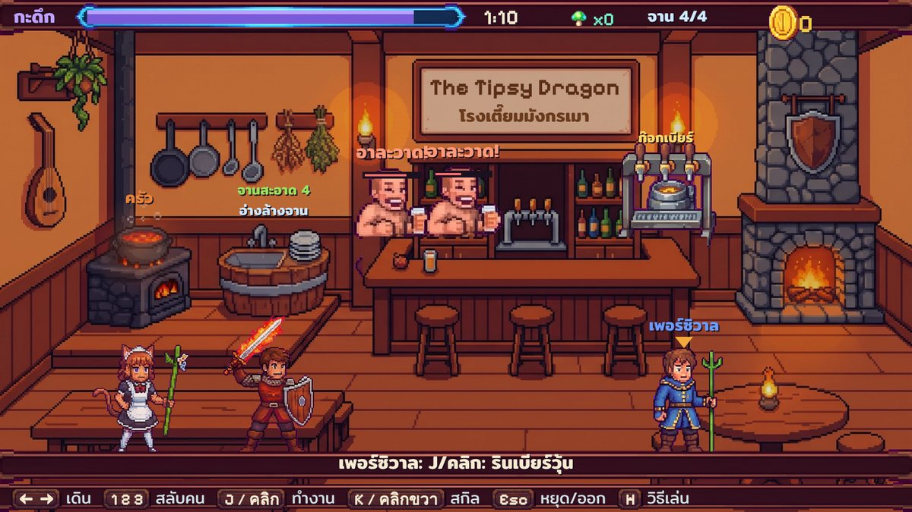

เรื่องราว
ในอาณาจักร Aethelgard มีร้านเหล้าเล็กๆ ชื่อ The Tipsy Dragon ด้านหน้าเป็นร้านขายเบียร์และต้มยำ แต่ด้านหลังคือฐานลับของอัศวินตกอับสามคน ที่ต้องออกไปปราบกองทัพมอนสเตอร์ของ Obsidian Syndicate
ออกผจญภัยในด่าน เก็บวัตถุดิบหายาก ล้มบอส แล้วกลับมาเปิดร้านกะดึกเพื่อหาเงินมาอัปเกรดอาวุธและหมักยาเพิ่มพลัง
อัศวินทั้งสาม
อาเธอร์ (Arthur)
คนล้างจานผู้ถือดาบไฟกับโล่ ตีระยะประชิด ท่าพิเศษคือคลื่นเปลวไฟ ในร้านรับหน้าที่ล้างจานและไล่ขี้เมา
โรสแมรี่ (Rosemary)
แม่ครัวหูแมวในชุดเมด ใช้ไม้เท้าไผ่ยิงดาว ท่าพิเศษคือชามต้มยำกุ้งยักษ์ ในร้านกดลูกศรตามจังหวะเพื่อทำอาหาร
เพอร์ซิวาล (Percival)
นักดนตรีเสื้อคลุมน้ำเงิน ยิงเวทน้ำแข็งและเรียกฝนอุกกาบาต ในร้านรินเบียร์ เสิร์ฟ และเล่นพิณกล่อมลูกค้า
จุดเด่นของเกม
- สลับตัวอัศวินได้ตลอดเวลา ใช้จุดเด่นของแต่ละคนผ่านด่าน
- เกจพลังพิเศษ ครึ่งหลอดใช้ท่าพิเศษ เต็มหลอดใช้ ท่าประสานหม้อต้มยำมหาภัย กวาดทั้งจอ
- ด่านป่าเห็ดพิษ มีกำแพงลับ หีบสมบัติ หีบมิมิก และบอส ราชาเห็ด King Shroomba
- โหมดกะดึกในร้านเหล้า ทำอาหารตามจังหวะ รินเบียร์ เสิร์ฟลูกค้า รับมือขโมย ลูกค้า VIP และไฟไหม้ครัว
- ห้องหมักยาและตีเหล็ก อัปเกรดอาวุธและทำยาเพิ่มพลังจากวัตถุดิบที่เก็บได้
- ภาพพิกเซลวาดใหม่ทั้งเกม พร้อมเพลงประกอบและเสียงแนวเกมยุค 16-bit
ภาพจากในเกม



วิธีเล่น
| ปุ่ม | ในด่าน | ในร้าน |
|---|---|---|
| ← → หรือ A D | เดิน | เลือกจุด (ครัว อ่าง โต๊ะ ก๊อกเบียร์) |
| ↑ W Space | กระโดด | กดลูกศรตอนทำอาหาร |
| J Z หรือคลิก | โจมตี | ทำงานที่จุดนั้น |
| K X หรือคลิกขวา | ท่าพิเศษ (เกจครึ่งหลอด) | สกิลของตัวละคร |
| L V | ท่าประสาน (เกจเต็ม) | |
| 1 2 3 Q E | สลับอัศวิน | สลับคนทำงาน |
| C | เรียกลูกทีม | |
| H / Esc / M | วิธีเล่น / หยุดเกม / ปิดเสียง | |
คำถามที่พบบ่อย
เล่นฟรีไหม
ฟรีทั้งเกม เปิดในเบราว์เซอร์ได้เลย ไม่ต้องสมัครหรือติดตั้ง
เล่นบนมือถือได้ไหม
เปิดได้บนมือถือที่มีหน้าจอสัมผัส แต่เล่นด้วยคีย์บอร์ดและเมาส์บนคอมพิวเตอร์จะสะดวกที่สุด
เซฟเกมไหม
เกมบันทึกความคืบหน้าไว้ในเบราว์เซอร์ของคุณเอง
ได้แรงบันดาลใจจากอะไร
เกมแอ็กชันอาร์เคดยุค 90 และเกมทำอาหารจับจังหวะ ตัวละคร ภาพ และเพลงทั้งหมดเป็นของเกมนี้เอง
About the game (English)
Tavern Knights is a free 16-bit pixel-art action side-scroller with a tavern-management twist, playable in any web browser. Swap between three down-on-their-luck knights, Arthur (flaming sword and shield), Rosemary (cat-eared chef with a star-shooting staff) and Percival (ice-magic bard), fight through the Poison Mushroom Forest and defeat King Shroomba. Then run the night shift at The Tipsy Dragon tavern: cook to the rhythm, pour beer, serve customers and deal with thieves and kitchen fires. Earn gold to upgrade gear and brew potions.